Nessa parte do curso, vamos usar as ferramentas que foram instaladas em sua máquina na aula anterior para criar o seu primeiro repositório público. Com ele, é possível criar e organizar os seus projetos hospedando os seus códigos fonte, sendo ainda mais vantajoso se o trabalho estiver sendo realizado em grupo. Como exemplo, veja esse repositório que eu fiz, onde nele há todo o conteúdo que levou a criação desse site:
Vale lembrar que para prosseguir bem em tudo que eu mostrarei aqui, é necessário ter fixado bem os conteúdos explicados previamentes sobre Git e GitHub. Se você ainda não seguiu os passos anteriores, volte e veja para que você consiga se desenvolver bem no Git e GitHub. Caso já tenha visto, seja bem vindo a uma das partes mais importantes desse curso.
| Assuntos Anteriores |
|---|
| Aprendendo Sobre o Git |
| Aprendendo Sobre o GitHub |
| Preparando o Ambiente de Trabalho |
Começando com o Reposítorio Local¶
Vamos trabalhar com uma sequência de passos para mostrar a você como iniciar de forma profissional com o seu repositório pessoal. Vale a pena lembrar que há duas outras formas que você pode criar o seu repositório: podendo ser diretamente pelo repositório remoto GitHub (a forma mais simples de todas) ou você pode também usar comando no Git Bash (método esse um pouco mais complexo a primeira vista). A forma que será mostrada aqui usará os recursos que foram instalados na aula anterior, e ela é mais dinâmica, pois trata da harmonia criada entre o Git, GitHub Desktop e o Visual Studio Code.
- No GitHub Desktop, após você estar logado com seu perfil do GitHub, é possível criar o seu repositório local (inicialmente, ele ficará armazenado na sua máquina, e não no repositório remoto GitHub). Quando você clicar no botão "Create a new repository", você deve escolher um nome para o seu repositório, escolher em que diretório será salvo o seu arquivo, adicionar uma descrição, informar se o seu repositório será público ou privado e escolher uma licença.
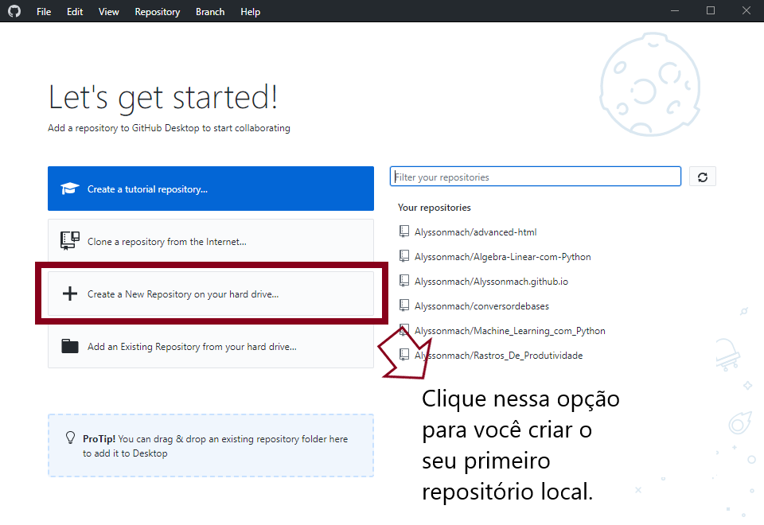
Clique em "Create a New Repository" no GitHub Desktop para criar o seu repositório local.
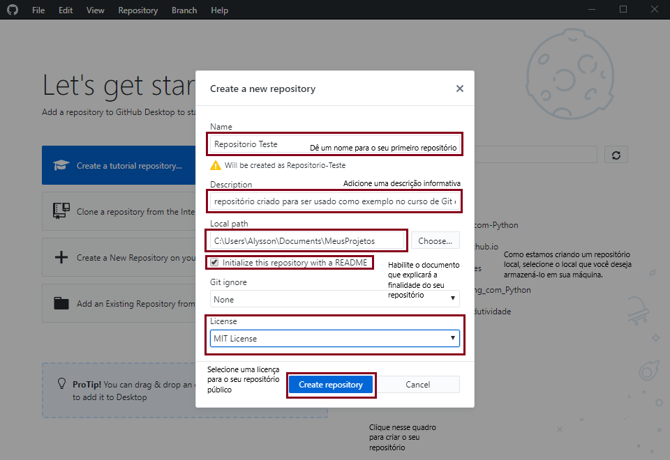
Preencha as informações para a criação do seu repositório local. Após todos os passos terem sido concluidos, clique em "Create Repository".
- O repositório ficará salvo em sua máquina, por esse motivo, tenha cuidado para não apagar ou adicionar nenhum arquivo intruso, pois isso poderá afetar o seu repositório remoto quando você fizer um "push".
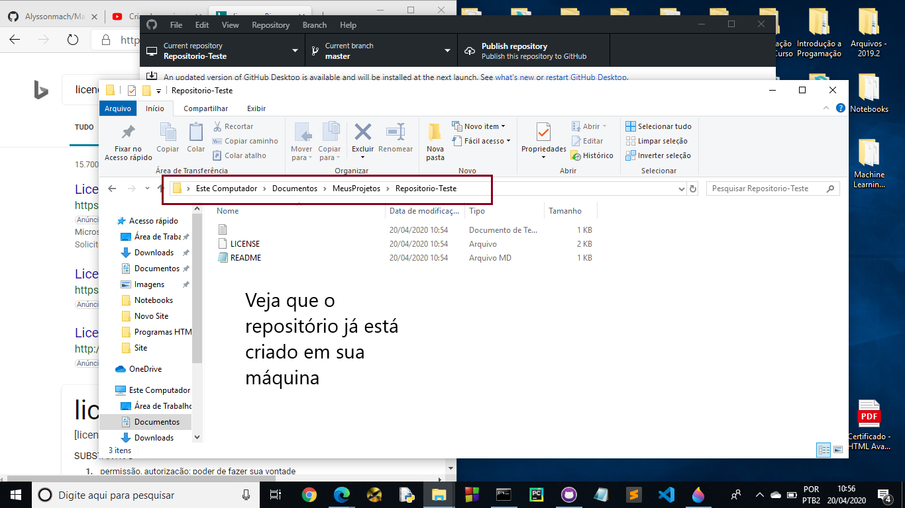
Observe que todos os documentos da licença e do README já aparecem automaticamente no seu GitHub. Em aulas futuras, você aprenderá a atualizar o seu documento README com a linguagem de marcação Markdown.
- Com o seu repositório local criado, vamos agora publicar o mesmo no GitHub clicando em "Publish Repository". Dessa forma, você possuirá tanto um repositório local, quanto um repositório remoto.
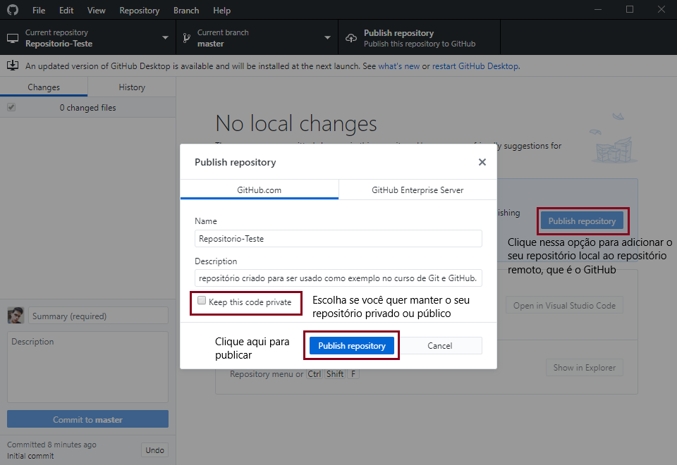
Clicando em "Publish Repository", você criará o seu repositório remoto no GitHub. Vale a pena lembrar que você deve escolher se deseja que o seu repositório seja público ou privado.
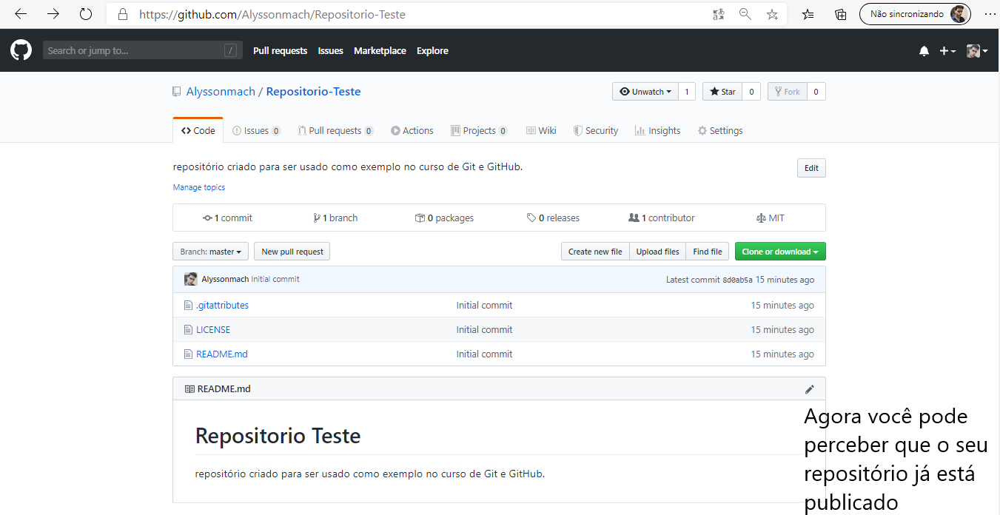
Acessando o site github.com e pesquisando por seu repositório, você pode perceber que ele já está criado remotamente.
- Para editar arquivos existentes, adicionar novos ou remover alguns, você pode usar o Visual Studio Code. Pelo GitHub Desktop, você pode clicar em "Open Visual Studio Code" para ter acesso a todos os arquivos presentes no seu repositório local. Como o Visual Studio Code possui suporte para diversas linguagens de programação, ele é uma ótima ferramenta de trabalho.
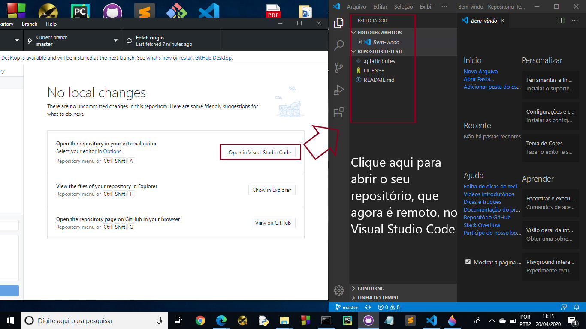
Com o Visual Studio Code você pode ser mais produtivo enquanto estiver trabalhando em seu repositório.
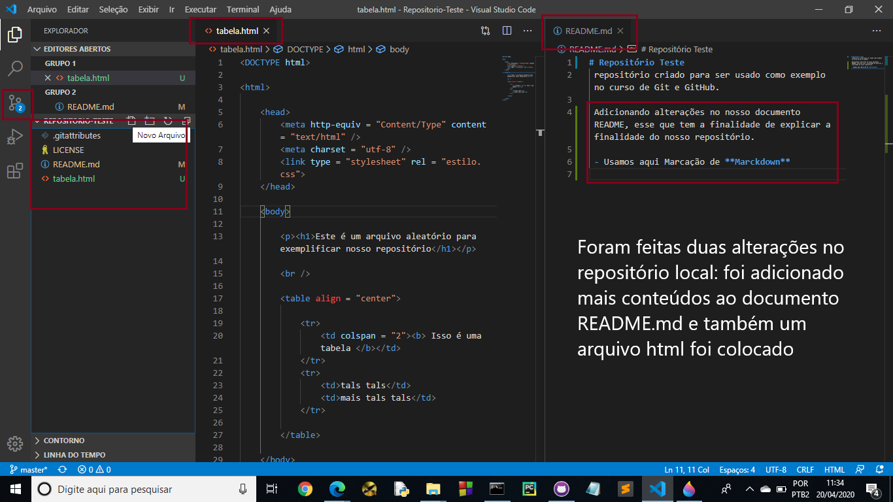
Veja pela imagem acima que foram feitas duas alterações no repositório, uma adição do arquivo tabela.html e uma alteração no documento README.md. Cada passo feito será adicionado ao seu repositório local pelo Git.
- Após ter feito suas edições usando o Visual Studio Code, você pode voltar para o GitHub Desktop para observar que todo o seu trabalho feito foi registrado. O que acaba de ser feito com esse passo foi a criação de uma nova versão (ou um versionamento), em que além de registrar o que foi feito de novidade em seus códigos, há também o registro da versão passada. Com tudo isso em mente, você pode comitar o seu código para o seu repositório local. Adicione uma descrição sobre o que foi feito e clique em "Commit to Master" (lembrando que master é o branch padrão).
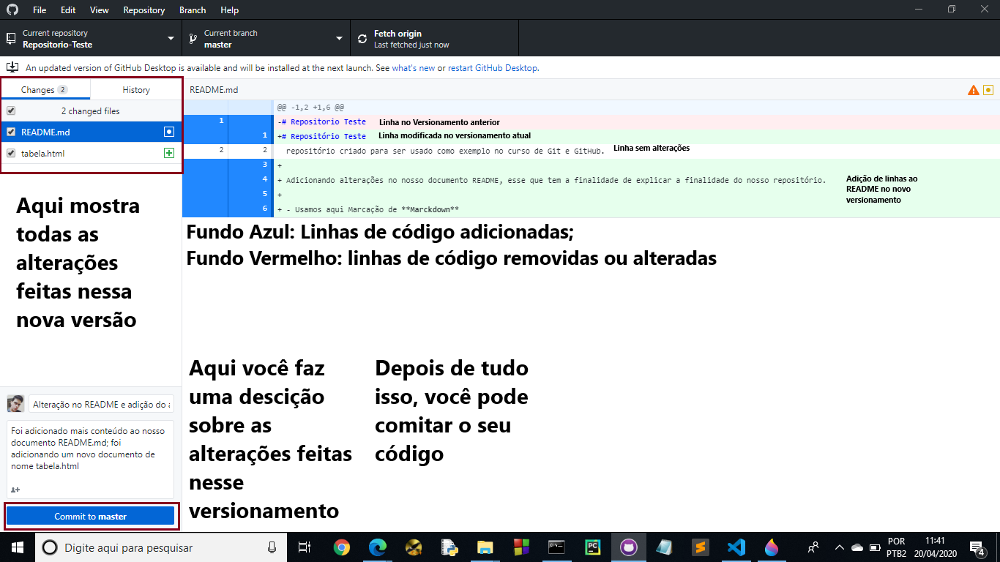
Volte para o GitHub Desktop e veja todas as suas alterações feitas nessa nova versão do seu repositório. Clique em "Commit to master" para enviar ao repositório local.
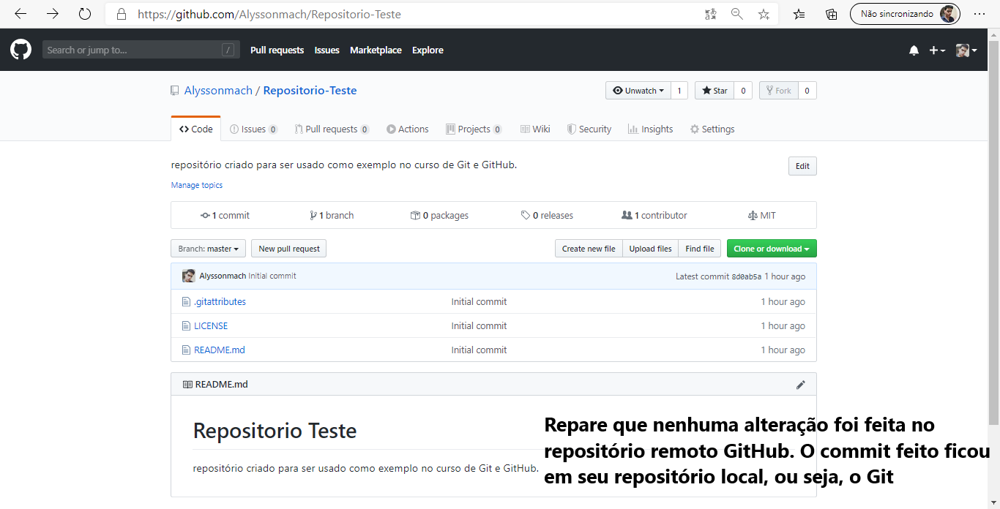
Como foi comitado no repositório local, nada ainda será registrado no seu repositório remoto. Dessa forma, você pode fazer milhares de commits em seu repositório local, salvando tudo automaticamente usando o Git, e só quando você sentir segurança em suas alterações feitas, postar oficialmente no seu repositório remoto.
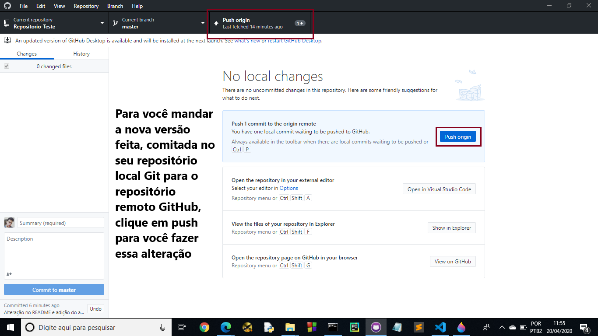
Para adicionar todas as alterações no repositório remoto GitHub, quando você se sentir totalmente seguro no que foi feito, clique em "Push origin" para fazer essa implementação.
- Se você visitar o seu perfil no GitHub e olhar o repositório criado, você pode verificar que o "push" deu certo. Além diso, você também tem a possibilidade de fazer edições, remover ou adicionar arquivos pelo própio GitHub.
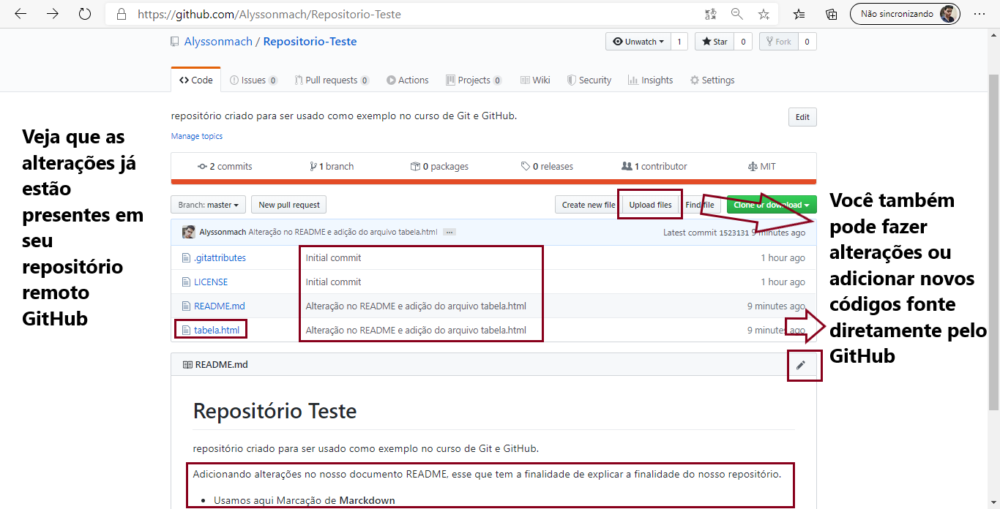
Veja que todas as alterações feitas já estão disponíveis no GitHub. Caso você deseje fazer edições, remoções ou adições de conteúdo pelo própio GitHub, isso também é possível de ser realizado.
- Pensando em manter o seu repositório local e o repositório remoto em perfeita harmonia, você pode também fazer o inverso, que é trazer as alterações feitas no repositório remoto para o seu repositório local. Usando o GitHub Desktop, você pode clicar na opção "Fetch origin" para fazer com que o Git faça a varredura no repositório remoto e encontre implementações que não estão presentes em seu repositório local. Caso seja encontrando alguma coisa, clique em "pull" para atualizar o seu repositório local na versão mais recente.
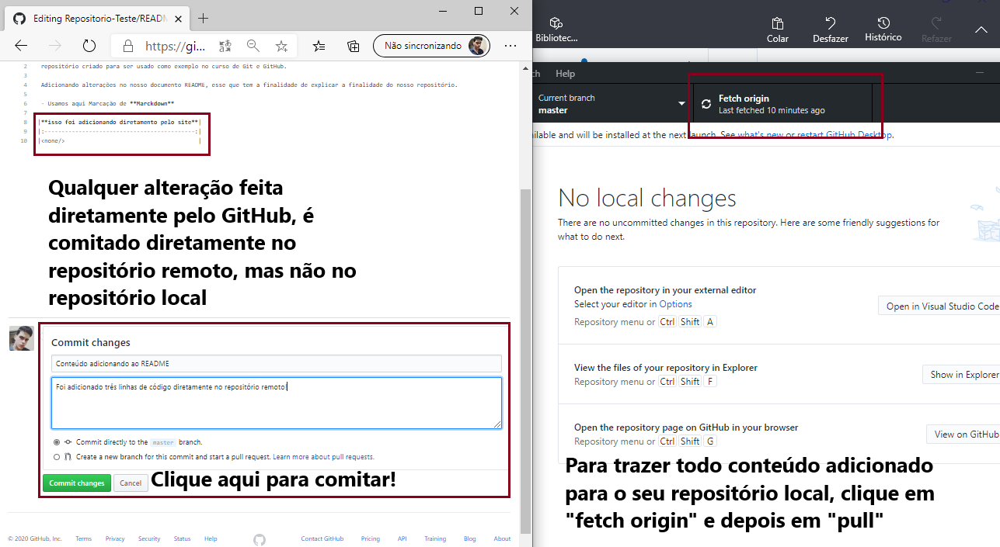
Com os comando "Fetch origin" e "pull", você pode atualizar o seu repositório local para a versão mais recente. Além disso, é possível fazer alterações diretamente em seu repositório remoto GitHub.
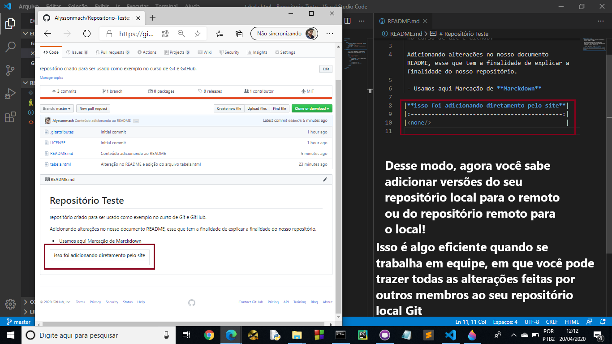
Perceba que o comando pull realmente é eficaz, as alterações feitas no repositório remoto estão disponíveis no repositório local. Além disso, o processo em sí é extremamente mais rápido pelo Git do que em outros softwares de versionamento, pelo simples motivo que ele so faz a adição ou remoção do exato ponto em que foi alterado no arquivo de código fonte em sí. Desse modo, o tempo gasto para sobrepor todo arquivo pelo novo é superado e, em casos de erros, é possível voltar para versões anteriores do código. Vamos ver isso com mais clareza mais adiante no curso.
- Por fim, adicione mais colaboradores ao seu repositório remoto (veja aulas anteriores para saber como faz isso!). Com isso, você pode estimular o trabalho em grupo na comunidade Open Source e ficar cada vez mais profissional no GitHub, essa que é uma excelente ferramenta para ser usada no mercado de trabalho.
Clonado Repositórios Remotos Seus ou de Terceiros¶
O GitHub é uma ferramenta poderosa em que também podemos contribuir com o projeto de terceiros. Lembre-se que ela é uma plataforma que tem a principal vantagem de conter inúmeros projetos Open Source e, desse modo, garantir que outras pessoas possam colaborar com seu projeto, sejam elas colaboradoras oficiais ou não. Para essas pessoas que se enquadram nesses casos, há algumas ferramentas que permitem a elas clonar o seu repositório nas máquinas delas ou criar uma outra ramificação do seu projeto, visando dar continuidade ou até fazer correções para você. Vamos ver como isso funciona na prática.
- Para clonar um repositório remoto e torná-lo local em sua máquina, você pode abrir o GitHub Desktop, ir na opção "file" e clicar em "clone repository".
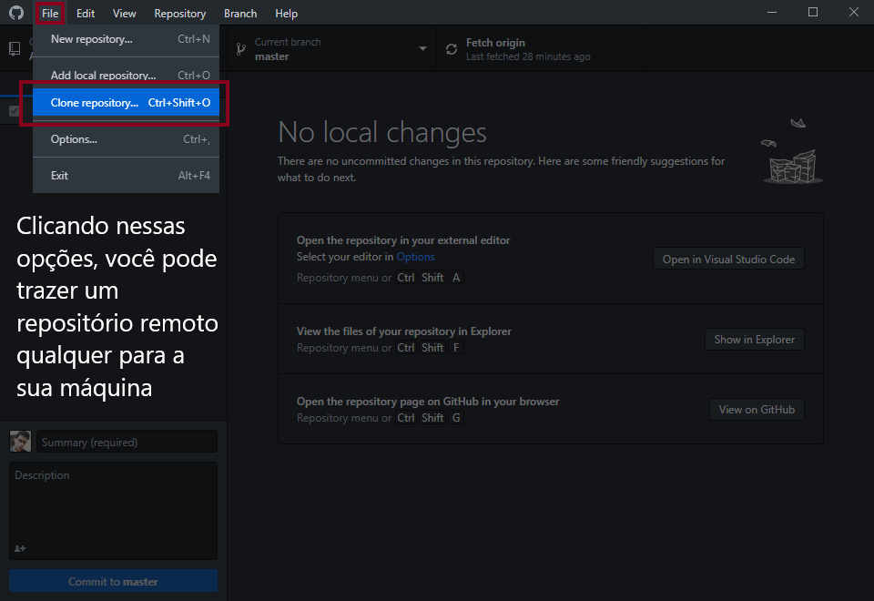
Você pode clonar um repositório remoto em sua máquina clicando em "file" e depois em "clone repository". Lembrando que dependendo do repositório que está sendo clonado, você não pode fazer alterações nele, mas pode fazer sugestões e dar continuidade ao projeto usando outros métodos.
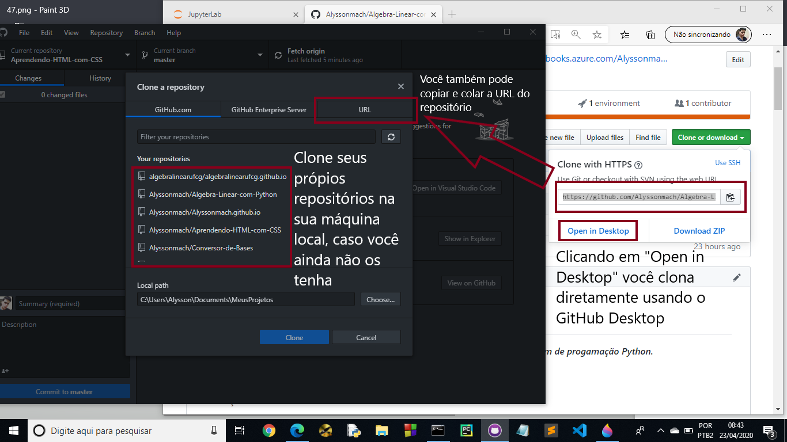
Usando o GitHub Desktop, você pode ter uma ferramenta poderosa em suas mãos para fazer a ligação entre o repositório remoto e o local. Além disso, não esqueça que você pode alterar os arquivos tanto pela pasta original que eles estão armazenando localmente ou abrindo pelo Visual Studio Code usando o GitHub Desktop.
Lembre-se que qualquer alteração que você faça na pasta do repositório local que está em sua máquina, o GitHub detecta a alteração e você pode comitar a mesma ao repositório remoto. Esse recurso é de grande ajuda se você possui arquivos em sua máquina e deseja colocar no GitHub.
Além disso, tenham consciência e respeito com os trabalhos alheios. Nunca pegue projetos feitos por outras pessoas e atribua a sua autoria, pois além de ser uma prática antiética, é uma prática criminosa punível por lei.
Próximos Passos...¶
Na próxima aula, vamos criar uma página na Web, hospedando-a no GitHub Pages. Com isso, você pode fazer uma melhor divulgação do seu trabalho usando HTML, CSS e JavaScript.
Está gostando do conteúdo? Compartilhe com seus amigos para que eles possam aprender também! Ajude a tornar a educação gratuita mais plural e democrática.